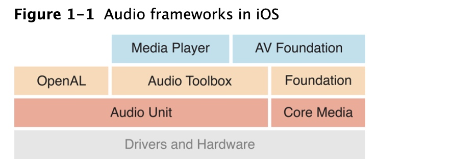

Audio Unit 工作原理
参阅Audio Unit Hosting Guide for iOS
AudioUnit framework
Audio Unit用于向应用程序添加复杂的音频处理功能。还可以在宿主应用中创建或者修改audio的Audio unit extension。
iOS 提供了音频处理插件，支持音频混合、均衡、格式转换以及用于录制、播放、离线渲染、实时对话(例如VoiP)的实时输入和输出。可以在iOS应用程序中动态的加载和使用这些插件，这些托管的插件即为audio unit
audio unit 通常在 audio processing graph上下文中工作。
因为audio unit 是iOS中最底层的音频编程层，因此其需要更深入的了解，因此 除非你需要实时播放同步声音、低延迟的I/O操作或者特定的unit功能呢，否则请先考虑使用Media Player、AV Foundation、OpenAL或Audio Toolbox这些高级结束，参阅Media Playback Programming Guide
Audio unit的生命周期：
- 在运行时，获取对可动态链接库的引用，库中定义了要使用的 audio unit
- 实例化
audio unit - 根据类型要求配置音频单元，适应自己的应用意图
- 初始化audio unit 准备处理音频
- 开始音频流
- 控制audio unit
- 结束后，销毁unit
构建托管音频单元的应用程序的步骤Constructing Audio Unit Apps：
- 配置应用程序的audio session确保应用程序可以在系统和设备硬件的上下文中正常工作
- 构造一个
audio processing graph(AUGraph).参阅Audio Unit Hosting Fundamentals - 提供用于控制图的audio unit 的用户接口
可以下载iOS开发中心的示例程序Audio Mixer(MixerHost)
参考文档：
Media Playback Programming Guide 学习了解各种音频技术 来检查是否有更高级别技术可以满足您的音频要求
A Little About Digital Audio and Linear PCM 学习相关音频基础知识 概念
Core Audio Glossary 来查看是否有不懂的专业术语概念
Audio unit 基础知识
iOS中的所有音频技术都是建立在audio unit之上的。

因此建议仅当需要以下条件时，可以使用unit，否则请使用高级的API：
- 低延迟的同步音频I/O(例如 VoIP)
- 响应性的播放合成声音，例如 音乐游戏或合成乐器
- 使用特定音频单元功能，例如 回升消除、混音或音调均衡
- 使用链式处理体系结构，可以让音频处理模块组装到灵活的网中。这是iOS中唯一提供此功能的API
iOS中的Audio unit
iOS中提供了七个unit，按照目的分为4类
- Effect： iPod Equalizer
- Mixing： 3D Minxer、Multichannel Mixer
- I/O：Remote I/O、Voice-Processing I/O、Generic Output、
- Format conversion：Formater conversion
Effect Unit
音效单元iPod 均衡器，其与内置的iPod应用程序使用的均衡器相同。此unit提供了一组预设的均衡曲线
Mixer Units
iOS中有两个混音单元。
3D Mixer是构建OpenAL的基础(大多数需要3D mixer功能呢最好选择使用 Open AL)，提供了更适合应用程序的更高级的API。
Multichannel Mixer unit可以为任意数量的单声道或者立体声流提供混音，并带有立体声输出。可以关闭或者打开每个输入、设置输入增益、设置立体声声像位置。参见示例项目Audio Mixer（MixerHost）
I/O Units
iOS中有3个I/O单元
Remote I/O是最常用的，连接到输入输出音频硬件，可以低延迟的访问输入输出音频样本值，并用附带的音频转换器单元在硬件音频格式和应欧阳程序音频果然是间提供格式转换。参见项目aurioTouchVoice-Processing I/O unit通过添加用于聊天应用或者VoIP的回音消除功能来扩展Remote I/O，还提供了自动增益教正、语音处理质量调整和静音功能Generic Output unit不连接到音频硬件，而是提供一种将处理链的输出发送到应用程序的机制。通常，试用期进行离线音频处理
Format Converter Unit
通常通过I/O单元间接使用
使用Audio unit两种API
iOS有可直接使用audio unit的一个API，而另一个API用于处理audio processing graph。当在应用中使用audio unit可以同时使用两个API
- 直接使用audio unit Audio Unit Component Services
- 创建和配置audio processing graph Audio Unit Processing Graph Services
推荐使用audio processing graphAPI 使代码更加易于阅读，并且支持动态重新配置
指定和获取audio unit
在运行时查找audio unit，请先在audio component description data结构中指定其类型、子类型和制造商。不论使用audio unit还是graph API都要执行此操作
AudioComponentDescription ioUnitDescription;
ioUnitDescription.componentType = kAudioUnitType_Output;
ioUnitDescription.componentSubType = kAudioUnitSubType_RemoteIO;
ioUnitDescription.componentManufacturer = kAudioUnitManufacturer_Apple;
ioUnitDescription.componentFlags = 0;
ioUnitDescription.componentFlagsMask = 0;
所有的iOS音频单元都使用
kAudioUnitManufacturer_Apple如果要创建通配符，将字段设置为0.例如为匹配所有的I/O单元，将
componentSubType字段设置值为0
有了description 就可以使用两个API之一 获取指定音频单元
AudioComponent foundIoUnitReference = AudioComponentFindNext (
NULL,
&ioUnitDescription
);
AudioUnit ioUnitInstance;
AudioComponentInstanceNew (
foundIoUnitReference,
&ioUnitInstance
);
传递NULL 给第一个参数，表示使用系统定义的顺序来找到和描述匹配的第一个系统音频单元。如果在这个参数传递先前已经找到的音频单元，则会查找下一个匹配的audio unit，这常用于通过重复调用
AudioComponentFindNext来获取所偶遇I/O单元引用
AudioComponentFindNext函数结果是对定义的audio unit的dynamically-linkable library的引用，将其传递给AudioComponentInstanceNew实例化音频单元
// Declare and instantiate an audio processing graph
AUGraph processingGraph;
NewAUGraph (&processingGraph);
// Add an audio unit node to the graph, then instantiate the audio unit
AUNode ioNode;
AUGraphAddNode (
processingGraph,
&ioUnitDescription,
&ioNode
);
AUGraphOpen (processingGraph); // 间接执行音频单元的实例化
// 获取对新实例化的I/O单元的引用
AudioUnit ioUnit;
AUGraphNodeInfo (
processingGraph,
ioNode,
NULL,
&ioUnit
);
这种方式引入了AUNode，这是在graph中代表unit的不透明类型。
使用scope和element指定Audio Units各部分
audio unit的各部分按scope和element组织。当调用一个函数时配置和控制audio unit，指定scope和element来标识函数的特定目标
scope是audio unit的程序化上下文。这些context是绝不会互相嵌套的，可以使用Audio Unit Scopes枚举常量来指定范围
element是嵌套在audio unit scope内的程序化上下文。当element是输入输出范围一部分时，类似物理音频设备中的信号总线，因此有时称为总线。 可以通过0索引的整数值指定element如果设置应用于整个scope的属性或者参数，指定元素值为0
不同的audio unit可能有不同的架构。global scope适用于所有的audio unit，并且不与特定的特定音频流相关联，它只有一个element 0，而某些属性也只能应用于global scope(kAudioUnitProperty_MaximumFramesPerSlice)。
上图说明了一种音频单元的通用体系结构，其中输入和输出上的元素数量相同。但是，各种音频单元使用各种架构。例如，混音器单元可能有多个输入元素，但只有一个输出元素
输入和输出scope直接参与音频流在audio unit间的流动。可以使用属性或者参数整体应用于输入、输出scope，而其他的属性和参数则适用于特定scope内的element
使用属性配置audio unit
audio unit属性是用于配置音频单元的键值对。键为带助记符的枚举整数例如kAudioUnitProperty_MaximumFramesPerSlice = 14。值为指定的数据类型。
使用AudioUnitSetProperty函数设置属性，并指定scope和element
UInt32 busCount = 2;
OSStatus result = AudioUnitSetProperty (
mixerUnit,
kAudioUnitProperty_ElementCount, // the property key
kAudioUnitScope_Input, // the scope to set the property on
0, // the element to set the property on
&busCount, // the property value
sizeof (busCount)
);
audio unit开发中的一些属性：
KAudioOutputUnitProperty_EnableIO:用于启用或禁用I/O单元上的输入和输出。默认，启动输出，但禁用输入KAudioUnitProperty_ElementCount:配置mixer unit输入元素数量KAudioUnitProperty_MaximumFramesPerSlice：用于指定audio unit应准备音频数据的最大帧来响应render call。对于大多数音频单元，在大多数情况下，必须按照参考文档中的说明设置此属性。否则，屏幕锁定时，音频将停止。KAudioUnitProperty_StreamFormat:用于指定特定音频单元输入或输出总线的音频流数据格式。 参阅Audio Unit Properties
大对数的属性值仅在audio unit未初始化时才能设置，这类属性不能由用户更改。但是对于例如iPod EQ unit中的kAudioUnitProperty_PresentPreset和 Voice-Processing I/O单元中的kAUVoiceIOProperty_MuteOutput属性播放音频时是会被更改的
查找可用属性：
AudioUnitGetPropertyInfo：查找属性是否可用，如果是，将提供其值的数据大小以及是否可以更改AudioUnitGetProperty、AudioUnitSetProperty:用于获取或者设置属性值AudioUnitAddPropertyListener、AudioUnitRemovePropertyListenerWithUserData:安装或者删除用于监视属性值更改的回调函数
使用参数和UIKit 给用户控制
audio unit参数数用户可控制的，在产生音频时可以实时更改，对正在执行的处理实时调整。与属性类似，参数也是键值对，键位枚举常量，但是值是相同类型32位浮点数。具体参数信息可以参阅Audio Unit Parameters
使用以下函数获取和设置参数值：
- AudioUnitGetParameter
- AudioUnitSetParameter
用户可以通过UI界面配置参数值，参见示例项目MixerHost
I/O unit 基本特征
I/O单元是每个audio unit应用都必须使用，在一个I/Ounit中包含两个元素
我们在应用中常将这两个element看做独立实体。例如根据需要用属性启用或者禁用I/O每个元素
element 1的输入范围直接连接到音频输入硬件，这是对开发不透明的，我们首次对音频数据的访问是在element 1的输出范围。同理，element 0的连接到音频输出硬件，这也是不透明的，我们只需要负责将音频传动到输入范围。
I/O unit是唯一能够启动或者停止audio processing graph中音频流的audio unit。因此，I/O unit负责audio unit中的音频流
Audio Processing Graphs
Audio Processing Graphs就是不透明类型AUGraph，用于构造和管理audio unit的处理链。
AUGraph类型增加audio units的线程安全，使您可以动态的重新配置处理链。
在AUGraph中使用又一种不透明类型AUNode来表示图形上下文中的音频单元。此时，我们通常将node作为unit代理与其交互，而不直接与unit交互。
但是，一个图形时，必须通过音频单元API配置每个audio unit。audio unit node是不可配置的。
可以通过定义代表完整音频处理子图的Node，将AUNode作为复杂graph中的实例。此时，子图的末尾I/O必须是Generic Output unit(其不与硬件设备连接)
因此构建graph的任务：
- 向图中添加子节点
- 直接配置节点代表的audio unit
- 将node互连
一个Audio Processing Graph 有一个 I/O Unit
Audio Processing Graph都有一个I/O unit，其I/O unit可以是各种类型具体取决于应用需求。
Graph通过AUGraphStart和AUGraphStop启动和停止音频流。这些函数又通过AudioOutputUnitStart和AudioOutputUnitStop将消息传递给I/O unit。因此，I/O unit将负责graph中的audio stream
Audio Processing Graphs提供了线程安全
Audio 在Graph 中 通过 pull 流动
在audio processing graph中，在unit在需要更多数据时调用其provider。这种数据的请求流和音频流方向相反
对一组数据的每个请求称为render call或者随意的称为pull。render call请求的数据更加恰当的称为audio sample frame。
响应render call而提供的一组audio sample frame称为slice。提供slice的函数称为render call back(渲染回调函数)。
整个工作流程
- 调用AUGraphStart函数后，虚拟输出设备触发
Remote I/O输出元素的渲染回调函数。这个函数请求一片处理过的音频数据帧 Remote I/O的回调函数在输入缓冲区查找要处理的音频数据，如果有待处理的数据将使用它，否则它将调用应用程序中连接到其输入的任何内容的渲染回调。在上图中，I/O unit从effct unit中请求以片数据effect unit行为和I/O unit 相同，当需要数据时，使用了app的渲染回调函数- app的渲染回调函数是该请求的最终接收者，将请求的帧提供给效果器
- 效果单元处理app 回调函数提供的slice。然后将其处理的数据提供给I/O unit
Remote I/O处理slice，然后将已处理数据提供给虚拟输出设备。这样就完成了一个周期
渲染回调函数
使用符合AURenderCallback类型的渲染回调函数，将音频数据从磁盘或内存提供到audio unit输入总线，此时当audio unit需要一片数据时 会调用此回调
渲染回调有严格的性能要求，render callbak在实时优先的线程上，后续的render call会异步到达。因此，渲染回调所做工作都是在这种时间受限的环境中进行。如果在下一个渲染调用到达时，回调仍在响应上一个渲染调用生成sample frames，那么声音就会出现空白。因此不能在回调函数中执行锁、分配内存、访问文件系统、网络连接等耗时任务
理解渲染回调函数
static OSStatus MyAURenderCallback (
void *inRefCon,
AudioUnitRenderActionFlags *ioActionFlags,
const AudioTimeStamp *inTimeStamp,
UInt32 inBusNumber,
UInt32 inNumberFrames,
AudioBufferList *ioData
) { /* callback body */ }
inRefCon参数指向您指定的编程上下文。此上下文的目的是为回调函数提供计算给定渲染调用所需的任何音频输入数据或状态信息
IoActionFlags参数使回调可以向音频单元提供没有音频要处理的提示。在要为其输出静默的回调调用期间，在回调主体中使用以下语句：
*ioActionFlags |= kAudioUnitRenderAction_OutputIsSilence;
如果要保持静音，还必须将ioData参数指向的缓冲区显示设置为0
InTimeStamp表示调用回调时间。其中mSampleTime字段是一个样本帧计数器。每次调用该回调时，mSampleTime字段的值将按inNumberFrames参数中的数字递增。
InBusNumber参数指示调用回调的音频单元总线，允许您根据此值在回调中分支。此外，在将回调函数附加到音频单元时，可以为每个总线指定不同的上下文（inRefCon）
InNumberFrames参数指示在当前调用中要求回调提供的音频样本帧的数量。您可以将这些帧提供给ioData参数中的缓冲区。
IoData参数指向调用回调时必须填充的音频数据缓冲区。您放入这些缓冲区的音频必须符合调用回调的总线的音频流格式。
音频流格式启用数据流
AudioStreamBasicDescription 结构
在app和音频硬件中传递的音频数据为AudioStreamBasicDescription结构。常简称为ASBD
struct AudioStreamBasicDescription {
Float64 mSampleRate;
UInt32 mFormatID;
UInt32 mFormatFlags;
UInt32 mBytesPerPacket;
UInt32 mFramesPerPacket;
UInt32 mBytesPerFrame;
UInt32 mChannelsPerFrame;
UInt32 mBitsPerChannel;
UInt32 mReserved;
};
typedef struct AudioStreamBasicDescription AudioStreamBasicDescription;
//示例 定一个立体声流信息
size_t bytesPerSample = sizeof (AudioUnitSampleType);
AudioStreamBasicDescription stereoStreamFormat = {0};
stereoStreamFormat.mFormatID = kAudioFormatLinearPCM;
stereoStreamFormat.mFormatFlags = kAudioFormatFlagsAudioUnitCanonical;
stereoStreamFormat.mBytesPerPacket = bytesPerSample;
stereoStreamFormat.mBytesPerFrame = bytesPerSample;
stereoStreamFormat.mFramesPerPacket = 1;
stereoStreamFormat.mBitsPerChannel = 8 * bytesPerSample;
stereoStreamFormat.mChannelsPerFrame = 2; // 2 indicates stereo
stereoStreamFormat.mSampleRate = graphSampleRate;
- 首先，确定采样值数据类型，本示例采用
AudioUnitSampleType(在不同平台不同，iOS中代表8.24定点整数) - 初始化ASBD
- 为mFormatID指定kAudioFormatLinearPCM。因为audio unit使用未压缩的音频数据
- 为大多数unit指定
kAudioFormatFlagsAudioUnitCanonical.其负责AudioUnitSampleType类型的线性PCM采样值bit的所有布局细节。
注意：对于某些unit采用非典型的数据格式，即使用不同的数据类型mFormatFlags字段使用不同的标志集合。因此，使用特定audio unit请使用正确的数据合适和标志格式 mBytesPerPacket、mBytesPerFrame、mFramesPerPacket、mBitsPerChannel可以参阅AudioStreamBasicDescription 和 示例项目Audio Mixer（MixerHost）中ASBD示例mChannelsPerFrame1为单声道 2为立体声- 根据设置的采样率设置
mSampleRate
可以使用CAStreamBasicDescription.h文件中提供的方法，而不必每个字段的指定ASBD。使用SetCanonical和SetCanonical方法
了解在何处以及如何设置流格式
必须在processing graph的关键点设置音频流格式。在其他时候，系统设置格式，在其他地方，audio unit connection将流格式从一个audio unit传递到另一个audio unit
IOS设备上的音频输入和输出硬件具有系统确定的音频流格式。这些格式始终是未压缩的，线性PCM格式，并且是交织的。系统将这些格式强加在音频处理图中的I / O单元的朝外侧面上
app负责在I/O单元元素的向内侧面建立音频流格式,在app格式和硬件格式间执行必要转换。
应用程序还负责在图形中其他需要的地方设置流格式，例如Multichannel Mixer单元的输出处,只需要设置格式的一部分，特别是采样率。
audio unit connection:将音频数据流格式从其源音频单元的输出传播到其目标音频单元的输入。这是一个关键点，因此需要强调：流格式的传播是通过音频单元连接进行的，并且仅在一个方向上进行-从源音频单元的输出到目标音频单元的输入。
请尽可能使用硬件使用的采样率。当您这样做时，I / O单元无需执行采样率转换。可以最大程度地减少能源消耗,并可以使音频质量最大化